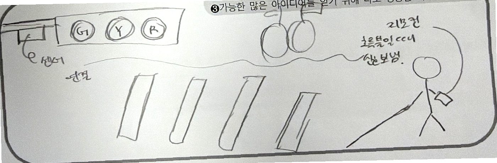

창업가 정신으로 관심 분야 문제 해결하기
베트남 시각장애인을 위한 소리 신호등(음향신호기)
우리 모둠을 소개합니다
KIS(호치민한국국제학교) · 관심 분야 교통
1관심 분야 체크하기
2모둠원끼리 문제 공유하고 정리하기
베트남은 오토바이 때문에 안 그래도 길 건너기가 위험한데,
시각장애인은 신호등도 안 보여서 훨씬 더 위험할 것 같다.
베트남 횡단보도에는 시각장애인에게 신호를 소리로 알려 주는 음향신호기가 없다.
한국에는 있지만 베트남에는 없다.
오토바이가 많아 길 건너기가 특히 위험하다.
우리가 매일 보는 길이라 모두 공감했다.
2숫자로 보는 문제
2023년 말 기준 도로를 달리는 오토바이가 약 7,500만 대예요.
1년 동안 교통사고 21,532건, 하루 평균 약 27명이 목숨을 잃었어요.
인구 조사에서 가장 많은 장애 유형이 시각 장애예요.
출처: Vietnam News(교통부·2024.10), The Saigon Times(교통경찰국 2024 통계), 베트남 인구센서스(장애 통계)
2한국에는 있고, 베트남에는 없는 것
3문제 해결 아이디어를 그림으로

3작동 원리
신호등 옆 회색 상자. 신호등에 “지금 초록불 켜!” 하고 신호를 보내요.
제어기에서 신호등으로 가는 신호를 읽어서 지금 무슨 불인지 알아내요.
시각장애인이 누르면 장치에 “지금 신호 알려 줘” 요청을 보내요.
“초록불입니다. 건너가세요. 남은 시간 15초.” 하고 말해 줘요.
3직접 체험해 보기
4최종 아이디어와 선정 이유
신호제어기의 신호를 읽어서, 리모컨을 누르면 스피커로 지금 신호와 남은 시간을 알려 주는 장치
5정책 제안서
5정책 제안서
6문제 해결 활동으로 성장한 나의 역량
모두가 소리로 안전하게 건널 수 있는 베트남을 꿈꿉니다.
강지완과 친구들 · 강지완 · 김대연 · 박유나 · 명하율 · 이승규